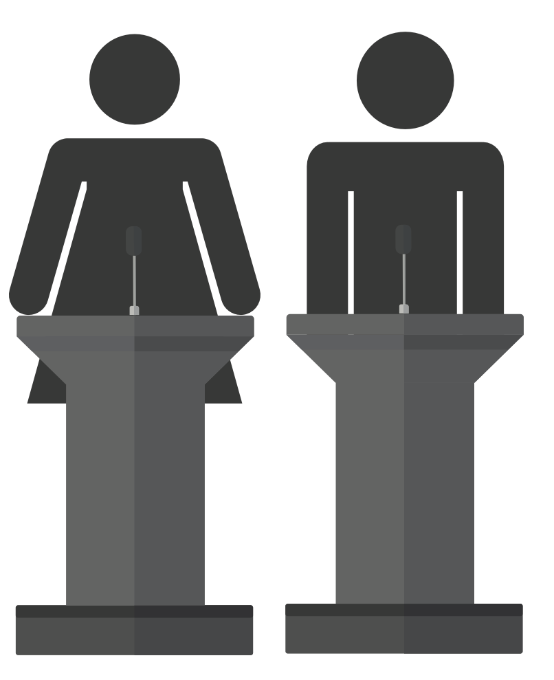

Els artistes del Parlamalament
+ Per saber-ne mésEls que volen afectar i intervenir en aquesta realitat precària, es poden declarar artistes del Parlamalament. Els artistes tenen els deures i els drets següents:
Deures
- Deure de reconèixer els altres artistes.Cap artista prosperarà simbòlicament sense contribuir al reconeixement dels seus iguals.
- Deure de compartir els fracassos.Les negatives, rebutjos i projectes descartats formen part del patrimoni col·lectiu del sector.
- Deure de qüestionar les evidències.Qualsevol dada, criteri de qualitat o mecanisme de selecció pot ser sotmès a debat públic.
- Deure de practicar l'ajuda mútua.Sempre que sigui possible, s'afavorirà la cooperació per sobre de la competència.
- Deure de parlar malament quan sigui necessari.Davant discursos buits, burocràcies excessives o injustícies evidents, l'artista té l'obligació moral de fer-les visibles.
Drets
- Dret a ser considerat artista sense necessitat de validació externa.La legitimitat no depèn de premis, galeries, subvencions o currículums.
- Dret al desacord.Tot artista té dret a discrepar de les institucions, dels consensos i fins i tot del propi Parlamalament.
- Dret a fracassar dignament.Cap projecte no realitzat serà considerat un fracàs personal sinó una contribució a les estadístiques ocultes de la cultura.
- Dret a la paraula.Tota persona artista té dret a expressar els seus malestars, dubtes i reivindicacions davant la comunitat.
- Dret a la participació cultural.Tota persona té dret a produir, compartir i experimentar pràctiques artístiques independentment de la seva situació econòmica o reconeixement institucional.
Els grups d'artistes
Grup Artistes A
Artistes de families amb capital cultural, facilitats econòmiques si es queden ells sense diners i alta facilitat de dedicació d'estudi.
Grup Artistes B + C
Els normis modernillos
Artistes que no tenen tots els factors del grup A. Acaben compaginant feines amb estudis o la pràctica artística.
Grup Artistes D
Artistes amb alguna dificultat concreta (social, vital i/o econòmica). També han de conciliar feina amb estudis o pràctica artística.
El treball parlamalamentari
Localitzar malestarDetectar la seva dimensió comuna
Compartir malestarCol·lectivitzar posició
Període constituentInstituir formes d'organització
ActuarCrear una realitat sensible
Les institucions de l'art
Escullen / No escullen
Legitimen / Deslegitimen
Visibilitzen / Invisibilitzen
Què queda als marges dels centres de circulació artística?
Què produeix la centralització de la pràctica en les institucions?
